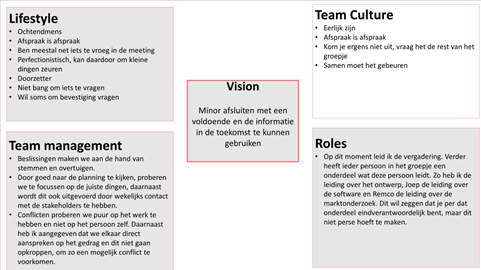
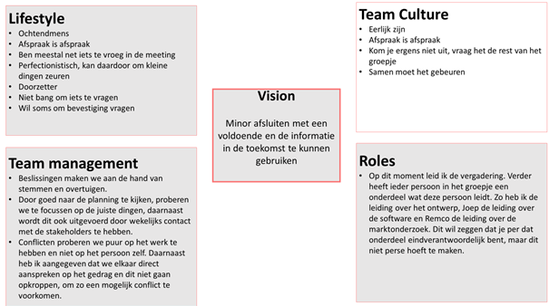
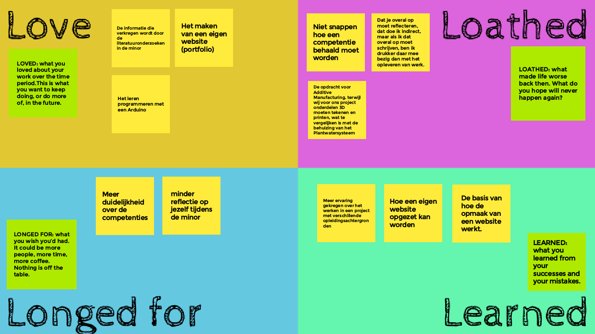

Interventies Smart Project
Naam: Jan-Willem Arendsen, Datum: 04-01-2021

Tijdens het project hadden wij wekelijks een interventie. Tijdens deze interventies ging het elke week over een ander onderwerp. Het hoofddoel van de interventies is om elkaar te informeren over zaken, waaronder het portfolio, zodat iedereen voor de minor slaagt. Daarnaast is een doel van de interventies om elkaar te informeren om zo tot meer inzicht en informatie te komen tijdens de minor.
Interventie 1 Team Charter
De eerste interventie was een meeting met alle docenten waarvan wij de eerste zes weken les hebben gehad. Tijdens deze interventie kregen wij aan het begin van een leerling Bedrijfskunde een model uitgelegd hoe eventueel de volwassenheid van een bedrijf bepaald kan worden. Dit was zeer interessant. Ik had mijn model hiervoor al af, maar het was zeker interessant en een manier om zoiets in de toekomst toe te passen. Deze persoon heeft een model gemaakt om te beoordelen hoe succesvol Kaizen is in een kaizengroep. Dit model is tot stand gekomen door een aantal artikelen te lezen en daar de punten die naar voren komen voor een succesvolle Lean op te schrijven. Op een gegeven moment komen er punten terug. Op dat moment heeft hij er een kruisje achter gezet. Aan het einde heeft deze persoon de mate van belangrijkheid geordend door de punten die het vaakst in de artikelen terugkwamen boven aan te zetten en dit af te laten lopen naar de punten die het minst vaak naar voren kwamen.
Mijn Team Charter
Vervolgens moest er een persoonlijke team charter opgesteld worden. Hierbij moesten de onderdelen lifestyle, team management, team culture, rollen en visie bepaald worden hoe jij dit het liefst wilt tijdens je minor.
Met lifestyle wordt bedoeld wat jouw individuele levensstijlen zijn. Ik ben een ochtendmens. Daarnaast ben ik erg van afspraak is afspraak. Tijdens meetings, ben ik meestal net iets te vroeg voor de meeting. Verder ben ik perfectionistisch, waardoor ik om kleine dingen kan zeuren en ben ik niet bang om iets te vragen. Daarentegen heb ik soms de neiging om bevestiging te vragen.
Bij team management gaat het over hoe de beslissingen gemaakt worden, hoe ervoor gezorgd wordt dat er op de juiste dingen gefocust wordt en hoe er met conflicten wordt omgegaan. Ik ben van mening dat beslissingen gemaakt moeten worden door stemmen en overtuigen. Door goed naar de planning te kijken, moeten wij op de juiste dingen focussen. Daarnaast houden wij wekelijks contact met de stakeholders. Ik vind dat conflicten puur op het werk gericht moeten zijn en niet op een persoon. Daarnaast heb ik aangegeven in de projectgroep dat we elkaar direct moeten aanspreken op het gedrag en dit niet op gaan kroppen, om zo een mogelijk conflict te voorkomen.
Team culture is de manier hoe er met elkaar omgegaan wordt. Welke kernwaarden zijn er en hoe wordt er plezier gemaakt. Mijn kernwaarden zijn:
- Eerlijk zijn
- Afspraak is afspraak
- Kom je ergens niet uit, vraag het de rest van het groepje. Dit is een kernwaarde, omdat iemand anders het misschien wel weet, waardoor er niet onnodig veel tijd wordt verspild met opzoeken.
- Samen moet het gebeuren. Je doet het project samen, dus samenwerken is belangrijk.
Bij Vision staat het doel waarvoor ik deze minor doe. Het doel waarvoor ik deze minor doe is om de minor af te sluiten met een voldoende. Daarnaast wil ik de verkregen informatie in de toekomst kunnen gebruiken tijdens mijn toekomstige baan. Zie de afbeelding voor mijn Team Charter. 
{kind=link}
Team Charter projectgroep
Nadat iedereen een persoonlijke team charter gemaakt heeft, werd er als opdracht meegegeven om de team charters te vergelijken, om zo tot een gezamenlijke team charter voor je projectgroep te komen. Voor het grotendeel kwamen de team charters van elkaar overeen. Bij mogelijke botsingen werd er een oplossing gezocht. Veel van die oplossingen hadden betrekking op het elkaar ondersteunen bij elkaars zwaktes en het gebruik maken van elkaars sterke punten.
Bij lifestyle is er afgesproken om afspraken vooral in de ochtend of begin van de middag te maken. Daarnaast proberen wij gebruik te maken van elkaars sterke punten en proberen we elkaar te versterken. Dit doen wij op het gebied van kennis, feedback en onze sterke punten toe te passen. Ook spreken wij elkaar aan op gedrag en proberen wij dagelijks en snel te communiceren via Whatsapp. Op die manier kunnen wij ook snel afspraken inplannen.
Bij Team management voeren wij sommige taken, waarbij een brede input nodig is, uit via korte sprints. Hierbij kan gedacht worden aan een brainstormsessie over marktonderzoek. De beslissingen die wij nemen, nemen wij door stemmen en overtuigen. Door goed naar de planning te kijken, proberen wij ons op de juiste dingen te focussen. Door wekelijks contact met de stakeholders, lukt het ons om op de juiste dingen te focussen. De conflicten die wij eventueel zouden kunnen hebben zijn puur op de opdracht gericht en niet op de persoon.
De team culture bestaat uit de kernwaarden van ons team. De kernwaarden van ons team zijn:
- Eerlijk zijn
- Afspraak is afspraak
- Kom je ergens niet uit, vraag het de rest van het groepje
- Samen moet het gebeuren
- We mogen elkaar feedback geven
Verder hebben wij een Belbintest uitgevoerd. Tijdens deze test kwam naar voren dat ik vooral een bedrijfsman en een zorgdrager ben, dat Joep een teamspeler is en dat Remco een zorgdrager en een onderzoeker is. Dit is een brede keuze, waardoor ons projectgroep theoretisch ook een goede projectgroep moet zijn. Hieronder zie je onze onze team charter. 
{kind=link}
Interventie 2 Smart Business
De tweede interventie werd gegeven door Mariëlle Seegers. Tijdens deze interventie hebben wij elkaar geïnterviewd over de voortgang van je portfolio. Ik heb Nick, Luuk en Job gesproken over het interview. Tijdens dit gesprek heb ik vooral verteld hoe ik mijn portfolio tot nu toe heb ingericht en hoe ik dit gedaan heb. Hierbij hebben wij alle competenties stap voor stap doorgenomen en heb ik stap voor stap uitgelegd wat ik gedaan heb. Vervolgens hebben wij elkaars portfolio doorgenomen, om te kijken hoe deze er uit zien. Ik vond aan de hand van het uiterlijk dat ik daar nog wat aandacht aan mag schenken. Wel vind ik dit minder belangrijk dan de inhoud, omdat ik meer van functionaliteit houd.
Na dit interview zijn de resultaten klassikaal besproken. Voor veel mensen betekende dit dat het nog niet duidelijk was wat er opgeleverd moet worden in het portfolio. Zo is er in de klas besproken wat bij Smart Me en Smart Communication opgeleverd moet worden. Hierbij heb ik mijn onderdelen toegelicht. Hierin kwam naar voren dat mijn Smart Me goed is, maar dat ik Smart Communication niet helemaal goed had begrepen. Ik dacht dat dit puur deskresearch was, maar dit gaat over de manier hoe je communiceert. Mijn deskresearch is niet voor niets geweest, want dit kan ik wel gebruiken als theoretische onderbouwing. Vervolgens kan ik hier een vervolg op schrijven hoe de uitvoering ging, door bepaalde situaties te reflecteren.
Vervolgens zijn de portfolio-onderdelen voor Smart Business besproken. Hierin kwam naar voren dat ik daar nog wat aandacht aan moet besteden. Er zijn voor dit vak twee doelstellingen. De eerste is: ontwerpt bedrijfsprocessen volgens Smart Industry criteria. Deze doelstelling wil ik behalen door het TOM-model, dat al is ingevuld tijdens een workshop voor IoT Solutions Partner, up te daten ergens tijdens het project. Vervolgens ga ik kijken naar de verschillen tussen het oude en het nieuwe model en beschrijf ik deze.
De tweede doelstelling is: Beschrijft de implicaties voor het gehele businessmodel en voor de positie van de organisatie in de keten. Niveau 2 van deze doelstelling is een BMC te herontwerpen na het doen van een technische innovatie binnen een bestaand proces. Dit heb ik al uitgevoerd tijdens de workshops (Zie link). Vervolgens wil ik voor een hoger niveau de positie van de organisatie in de keten weergeven, voor en na een innovatie. Dit wil ik doen door na het marktonderzoek de positie van IoT Solutions Partner op dit gebied te beschrijven.
Interventie 3 2 december 2020
Eerst werd er een presentatie door groep ATAG gegeven over hoe zij hun competenties gaan invullen.
Vervolgens gaf Hubert aan, aan welke competenties voldaan moet worden voor SMART Technology. Hierin zijn er twee competenties namelijk ‘’past nieuwe technologieën op het gebied van IoT en 3D-printen toe op een praktijkcasus en plaatst de casus in een businesscontext. Voor de eerste competentie moet de IoT Schakeling gefilmd worden in een paar minuten. Vertel hierin wat dit systeem kan. Dat in het donker de lamp aan gaat. Als de plant te droog is, dat dan de pomp aan gaat. Laat ook zien dat je met je mobiel de onderdelen aan kan zetten en (in mijn geval ook) dat de waardes op de portfolio veranderen. Maak naast het filmen, ook tijdens het maakproces foto’s. Deze foto’s kunnen geplaatst worden op het portfolio.
Voor de tweede competentie kun je de toepassing van IoT in de praktijk voor een bedrijf bijvoorbeeld beschrijven. Hierbij kun je bijvoorbeeld Smart Home (Klikaanklikuit) voor bedrijven beschrijven over wat dat een bedrijf op kan leveren. Dit hoeft niet lang te zijn, maar mag ook kort en krachtig.
Vervolgens hebben wij het kleurenmodel van Caluwé besproken.
Zie onze kleuren in het artikel Kleurentest. Dit model heb ik tijdens de laatste Smart Business les ingevuld. We kregen hierover aanvullende informatie. Het is als projectleider belangrijk om van tevoren te weten welke kleur de mensen waar iets veranderd wordt hebben. Zo kun je de mensen juist benaderen en gaat de verandering beter.
Interventie 4
Deze vierde interventie werd benaderd als een tussenpitstop. Tijdens deze interventie werd er aandacht besteed aan hoever je bent met je portfolio en je project. Daarnaast werd er aandacht besteed aan wat jij van de minor vindt.
Aan het begin van de minor werd je in groepen ingedeeld. In deze groepen mocht je je Smart Journey vertellen en hoe dat op dit moment ging. Ik zat in het groepje met Dirk, Sanne, Rafke en Sjoerd. Wij hebben onze ervaring over het project verteld en elkaars portfolio laten zien. Hierop hebben wij elkaar tips gegeven. Ook hebben wij elkaar gevraagd hoe wij dingen hebben uitgevoerd. Een voorbeeld hiervan is of wij al bezig waren met een eindrapport voor ons project. Het antwoord hierop is dat wij al een basis-bestand hebben, maar dat deze nog wel aangevuld moet worden.
In het tweede gedeelte van de interventie kregen wij een half uur de tijd om de 4L in te vullen over onze ervaring met de minor. De 4 L’s staan voor Love, Loathed, Longer for en Learned. In de onderstaande afbeelding zijn mijn notities hierop te zien. Vervolgens was de opdracht om te bekijken hoe je één notitie bij love toe gaat passen en hoe je één loathed weg probeert te halen. Mijn vervolgstappen van Loathed heb ik beschreven bij Longed for. Dit is uitgevoerd door meer gesprekken te hebben met docenten over het portfolio. Mijn love is het programmeren met een Arduino. Tijdens het project mag ik vanaf volgende week programmeren met een Raspberry Pi waardoor dat mijn love wordt.

{kind=link}
Interventie 5
Aan het begin van deze interventie werd er een presentatie over dashboards en de basisinformatie over dashboard gegeven. De presentatie begon op basisniveau, waarbij alle begrippen rondom dashboard werden uitgelegd. Dit vond ik slim. Ik heb zelf tijdens mijn huidige opleiding met Power BI gewerkt.
Tips:
- belangrijkste informatie links bovenin
- Niet te veel grafieken en tabellen gebruiken
- Gebruik een standaard kleurenpatroon
In het tweede gedeelte van de interventie hebben wij als groepje gekeken naar Smart Business met wat we tot nu toe gedaan hebben. Zie hiervoor het artikel Introductie